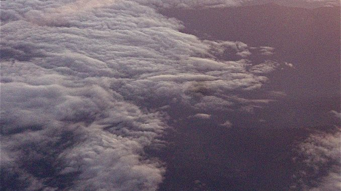

Undici volte 11 settembre

Le immagini e le torri: Baudrillard e Spiegelman. Stockhausen e la più grande opera d’arte immaginabile al mondo. Confronto fra interpretazioni: legittimisti e teorici del complotto. Oliver Roy e la cautela argomentativa. Piste aperte: Gore Vidal e Nafeez Mosaddeq Ahmed. Ruolo della stampa dal tempo di Tocqueville all’epoca della globalizzazione. Distinzione fra “fatti” e realtà. Inadeguatezza umana. Esigere comprensione. Simbologia del numero undici.
«Sulle strade del centro di Manhattan erano sparsi ovunque brandelli di corpi, vestiti, scarpe e carni dilaniate, tra cui una testa mozzata con lunghi capelli neri e un braccio strappato che giaceva sull’autostrada a circa trecento metri dall’impatto. La gente in fuga dall’attacco correva per le strade del centro in preda al panico e confluiva sul ponte di Brooklin, voltandosi continuamente indietro verso lo spettacolo incredibile delle Torri Gemelle che crollavano in una pila di fumo e cenere.»1 Undici anni fa, un undici settembre sembrava avesse scombinato il tempo, riavvolto i calendari, travolto certezze, provocando inoltre guerre rovinose tuttora in corso. Oggi, il giorno sembra essere tornato ad essere un giorno come un altro: commemorazioni sottotono, pochi politici, mentre l’annuncio di un prossimo museo segna la definitiva consegna dell’evento e delle sue memorie ad un ordine di conservazione.
Tuttavia, già da quel giorno, le immagini del disastro delle Torri Gemelle entrarono nel registro delle immagini, assumendone il monopolio, laddove il filosofo Jean Baudrillard affermò piuttosto tempestivamente sulle pagine del Le Monde che con quell’evento il rapporto dell’immagine con la realtà era ormai arrivato ad una radicalità assoluta.2 Il fumettista Art Spiegelman ne colse pienamente il senso nel titolo stesso dell’opera The Shadow of No Tower, con una sottigliezza purtroppo persa nella traduzione italiana.3
Nel frattempo, altre immagini legate a quelle circostanze venivano negate, rimosse. Nessuna foto delle vittime degli attentati, nessuna immagine relativa alle circostanze descritte nell’articolo del Wall Street Journal sopra citato, è mai stata esibite dai media. A causa delle procedure investigative, a distanza di giorni e anche di settimane, venivano interdette riprese o fotografie delle macerie da determinate angolazioni.4 I media, con insolita reticenza, evitarono di documentare le caratteristiche dell’area.5 In maniera analoga, verrà poi revocata visibilità internazionale alle immagini satellitari dell’imminente guerra in Afghanistan.6 L’informazione nasconde la morte, quella stessa morte alla cui esibizione sembrerebbe altrimenti votata.
Le Torri, onnipresenti nella loro pura virtualità, ci svelano che il nostro rapporto con il reale sta assumendo i caratteri della semplice verosimiglianza: ed è su questo occorre interrogarsi. Forse, è semplicemente troppo tardi per il reale e il vero. Può ricordarcelo anche il ritardo percettivo di un passante sorpreso dal primo impatto delle 8:46, immortalato dalle riprese di una telecamera amatoriale, la cui distanza dall’immediata attualità pur a lui presente è destinata a ripetersi indefinitivamente.
In altro modo, lo ricorda anche la diretta televisiva mondiale del secondo aereo in collisione sulla Torre Sud alle 9:03, che collassa su se stessa poco circa cinquanta minuti in una densa nube di fumo scuro, mandando polvere e detriti in ogni direzione. Queste torri gemelle, che insieme nascono e muoiono, nella loro perfetta specularità presentano piccole sfasature capaci di renderne la vicenda ancora più significativa. Con pertinenza, il compositore Stockausen ha definito l’evento «la più grande opera d’arte immaginabile al mondo.»7 Forse, il capolavoro definitivo, capace di decidere il prima e il dopo di ogni cosa.
Questa opera unica e irripetibile stabilisce i criteri di un’estetica impossibile dalle infinite suggestioni. In misura irriducibile ad ogni altra opera, conosce interpretazioni diverse, nessuna definitiva, riscontrabile o certa. Tale tendenza conosce come estremi opposti eppure complementari due diverse scuole di pensiero: due come le torri, tutte e due talmente colme di equivoci al punto che i nomi con cui sono chiamate rappresentano l’esatto contrario del loro operare.
Quelli definiti complottisti, intendono svelare complotti, piuttosto che ordirli (quindi più propriamente definibili come teorici del complotto). Si basano su una radicata convinzione della malafede del potere, per certi aspetti anche plausibile, ma strabordano nell’utilizzare in maniera rigidamente deduttivamente ogni dato per convalidare totalizzazioni sistematiche, perfettamente esplicative di macchinazioni politiche prive di ogni limite: questo è ad esempio il lavoro di John Kaminski.8 Altri, invece, si appellano ad una mole immensa di documenti di ogni tipo buttati giù alla rinfusa, trovando conferma alla suggestiva ipotesi di razze aliene in combattimento sul pianeta da millenni, e di questo genere il maestro indiscusso è David Icke.9 Kaminski prende in considerazione le manipolazioni del piano politico, assolutizzando il loro potere oltre ogni possibilità di contrasto o controllo; Icke formula la perfetta metafora della diffusa estraneità di molti umani al proprio mondo.
L’ambito in cui si collocano tali teorie è quello della paranoia, ma ci sono anche ipotesi più radicali, propriamente psicotiche, secondo le quali le torri non sono mai state colpite da nessun aereo, e tutto si riduce ad un fotomontaggio, alla faccia della “realtà” e anche delle 2977 vittime delle stime ufficiali, ridotte a meno che comparse.10
All’opposto, con un’altra improprietà linguistica, coloro che si fanno chiamare debunker, piuttosto bizzarramente riescono ad unire piglio demistificatore e difesa del potere costituito (e quindi, di fatto, sono legittimisti), portando alla definitiva assunzione delle posizioni ufficiali come rigorosamente vere, facendo marcia indietro sulla base di conclusioni date per certe solo in osservanza del principio d’autorità.11 Questo accade applicando la logica di un trattore, indipendentemente da qualunque cosa significhi “vero”, senza sottilizzare troppo se sia l’adeguatezza di una proposizione ad un ente reale, il disvelamento di un qualcosa che prima era nascosto, o qualsiasi insegnamento i secoli abbiano tentato di impartire agli uomini. Ambedue questi atteggiamenti al massimo possono illudere nel sentirsi “migliori”, ma non aiutano a comprendere niente.
Il rischio a cui tutte queste “scuole di pensiero” conducono è quello di una totale deresponsabilizzazione nei confronti di aspetti problematici che in definitiva sono soltanto prodotti nostri, produzioni umane. Tuttavia, è indicativo di un clima di estrema normalizzazione che chi insiste sulla ipotesi di complotto è in grado di fare riferimento a dati utili, che è sempre possibile confrontare e problematizzare. Del resto, l’enorme dramma collettivo dell’11 settembre, vissuto sulla propria pelle da tante persone, non esclude l’esistenza di coinvolgimenti in alte sfere, che vanno al di là della partecipazione di aderenti al network terroristico di Al Qaeda e del ruolo dell’ormai scomparso Osama Bin Laden, e non necessariamente identificati con gli interessi di una nazione o di un’altra, peraltro inadeguati al contesto economico e politico della globalizzazione.
Indagini e verifiche di responsabilità devono però essere accompagnate da una cautela fondamentale, espressa con chiarezza da Oliver Roy, che ribadisce quanto già prima messo in evidenza: immaginare una potenza capace di una strategia talmente grande, sottile e perversa da sfuggire ad una comprensione immediata, in grado di farsi letteralmente gli attentati da sola e poi fare finta di niente per anni davanti a tutto il mondo, significa soprattutto eccedere in razionalizzazione al punto di creare un mostro onnipotente e imbattibile, dimostrando di ignorare tanto i processi decisionali tipici statunitensi, quanto la dinamica per cui terroristi di ispirazione islamica possano aver progettato gli attentati.12
Per ottenere le risposte, occorre anche saper porsi le domande giuste, distinguere i dati, riconoscere le condizioni, ed evitare abbagli. Spunti significativi sono offerti dallo scrittore americano Gore Vidal, che pur essendo “non allineato” ha avuto un’esperienza particolarmente approfondita di mentalità e meccanismi della politica del paese, criticando in maniera marcata il potere delle componenti evangeliste, sviluppatosi da Carter a Bush, strettamente connesse con le lobbies petrolifere.13 Hanno poi una rilevanza straordinaria la gran massa di documenti e le ricostruzioni di politica internazionale fornite dal giornalista inglese di origine pakistana Nafeez Mossadeq Ahmed, che evidenzia i legami fra le intelligence degli USA e del Pakistan, gli interessi delle élite saudite, l’effettiva funzione dei Taliban afgani.14
Queste prospettive d’indagine sono basate su dati riscontrabili e competenze dimostrate. Altra cosa è sentenziare irrazionalmente, suffragando la mancanza o la pretestuosità di basi e argomenti con la pretesa di possedere rivelazioni di stampo quasi sovrannaturale che tuttavia non vanno al di là di identificare rigidamente con la realtà le notizie, negare ognuna di queste per poi assimilarle tutte, e alla fine decidere per quella più consona ai propri pregiudizi. Nonostante le pretese di “essere contro”, tale modo di pensare è estremamente solidale alla capacità della “comunicazione” di dire tutto, il contrario di tutto e in definitiva niente. Siamo sempre di fronte alla dissoluzione dei contenuti e alla vanificazione della conoscenza, esplicata dal filosofo Mario Perniola come peculiare «regime di storicità» della nostra epoca, che reputa ormai come normali eventi capaci di irrompere all’improvviso e miracolosamente.15
Nel chiederci che rapporto abbiano tra loro comunicazione e informazione, fatti e notizie, e tutto questo con la realtà, cerchiamo di focalizzare il ruolo della stampa negli Stati Uniti, valutandone storia, caratteristiche ed aspetti, arrivando ad i suoi attuali sviluppi a livello mondiale. Nel suo studio La democrazia in America, di cui la prima e fondamentale parte è scritta nel 1835, Tocqueville fornisce un quadro sull’informazione ancora piuttosto utile. Secondo una brillante formula, la stampa è più apprezzabile per i mali a cui mette argine, che per i beni che effettivamente porta, ma per raccoglierne gli eventuali benefici occorre accettarne anche i problemi. Sovranità popolare e libertà di stampa sono collegate. La libertà di stampa è garantita come difesa del cittadino contro gli abusi del potere costituito, la cui azione giudiziaria ha un preciso limite nella persecuzione delle opinioni.
Tocqueville individua però la ragione della mancata ostilità verso la stampa nello suo scarso potere effettivo sulla vita politica, molto attiva ma mossa soprattutto da interessi materiali. Inoltre, aspetti tipici del paese quali la mancanza di una centralizzazione culturale e di potere, la facilità con cui è possibile aprire un periodico, l’enorme diffusione delle testate, rendono impossibile la formazione di grandi correnti d’opinione. La situazione è paradossale: infatti, i pareri dei giornalisti contano poco, le personalità autorevoli scrivono sui giornali solo a titolo personale, e tuttavia la stampa rappresenta la principale potenza dopo il popolo, che nelle ex colonie si pone al centro del processo costituente in un modo che al tempo nella vecchia Europa non era affatto così diffuso.
Le conseguenze a cui giunge Tocqueville devono essere soppesate attentamente, perché ancora ci riguardano. Un costante ricambio di potere porta all’affermarsi di convincimenti politici generali piuttosto radicati, a cui ci si attacca soprattutto per orgoglio. Sono in pochi a riflettere e ad elaborare, perlopiù le persone credono impulsivamente, anche se poi ogni giorno cambiano idea, e seguendo il corso con cui una notizia appare e si esaurisce restano continuamente in preda al dubbio e alla diffidenza. Dove prevalgono bassi istinti e interessi materiali, un’idea tende ad installarsi in una maniera particolarmente tenace, indipendentemente dalla sua fondatezza: pertanto, anche cambiare un’idea che vale poco diventa «difficile quasi quanto farsi ammazzare».16 A dirlo è un nobile francese dalle tendenze liberali innamoratosi della mancanza di privilegi di nascita tipica dell’America.
Durante il tempo che ci separa da queste formidabili osservazioni, la missione di difesa sociale della stampa diventa sempre più aleatoria, così come la rozza superstizione delle opinioni diventa ancora più tenace. La causa è nella concentrazione industriale dei media e nella lotta per assicurarsi le pubblicità. Una prassi tipica del giornalismo storico, il muckraking, l’azione di “rastrellare letame”, in un paese che Henry James qualificava come il «paradiso della rapina», ha avuto il suo momento più tipico ad inizi ’900, ed è cominciato a sfiorire quando le concentrazioni monopolistiche hanno assunto un potere decisionale quasi assoluto. Il giornalismo che sapeva scrivere di storie personali leggendovi la storia collettiva, di cui John Steinbeck era uno dei principali fautori, scompare a favore della celebrazione del culto e dei paladini del consumo.17
Un caso significativo in cui la stampa è riuscita ad incidere sul potere è rappresentato dallo scandalo Watergate, e dalle conseguenti dimissioni di Nixon, in gran parte dovute alle indagini di Bob Woodward e Carl Bernstein, agevolate da intercettazioni che lo stesso presidente era solito effettuare. La segreteria del presidente tentò maldestre manipolazioni, mentre la CIA architettava un depistaggio delle indagini ai danni dell’FBI, dove i due reporter avevano le loro le fonti. Tuttavia, come ha evidenziato Chomsky, l’aspetto decisivo è che gli abusi di potere di Nixon gli avevano procurato ampie inimicizie nelle stesse élite economiche, senza il cui supporto i media non avrebbero dato tanto spazio, pur considerando le gravi violazioni dei principi democratici effettuate da Nixon in politica interna come in quella estera.18
Nella storia dei nostri giorni, si diffonde la globalizzazione finanziaria e si impongono le telecomunicazioni a livello planetario, cade la cortina di ferro, cambiano strutturalmente le relazioni tra informazione, economia e guerra. I conflitti prendono come prima linea d’attacco la formazione dell’opinione pubblica e l’indirizzo dei suoi consumi, l’informazione afferma definitivamente gli interessi di alta finanza ed élite militari. Il piano dell’informazione e quello di potere diventano interscambiabili, ma se la notizia diviene “fatto”, le strategie militari sono fatti che non possono diventare “notizia”. Insomma, alcuni casi è meglio insabbiare tutto, in altri casi la notizia è intenzionalmente costruita proprio per confondere.19
Da una parte e l’altra dei televisori, stragi inventate e code ai supermercati accompagnano istericamente la definizione del Nuovo ordine mondiale durante prima Guerra del golfo, e s’inaugura una nuova fase che nella Guerra balcanica precisa i suoi strumenti, riassumibili nella formula «manipolare informando».20 Il potere struttura la propria legittimità sul consenso popolare, fornendo una ideal politik per cui la guerra è “naturalmente” giusta e l’informazione “giustamente” controllata. Le posizioni problematiche sono coperte di retorica, fornendo una visione unilaterale e incompleta in cui vige la censura preventiva del “non dire”.21 La menzogna è quindi costitutiva alla notizia, cade l’importanza della testimonianza diretta, si insegue il sensazionalismo televisivo, i dispacci d’agenzia sostituiscono tanto il ruolo dell’inviato, quanto l’elaborazione colta. Vige l’imposizione di paradigmi indiscutibili, che creano marginalità e censure proprio laddove si dovrebbe approfondire.22 La manipolazione è costitutiva, le vie d’uscita molto ridotte, se non nel paziente lavoro di reperire nei registri linguistici lo scarto tra “comunicazione” e quanto è taciuto.
Con l’11 settembre, lo spettacolo televisivo della strage rende l’informazione del tutto irrilevante, e permette di diffondere con ampio successo dei falsi clamorosi. Citiamone alcuni dei più riusciti. Le immagini dei palestinesi in festa, riprese nei campi profughi di Ain Al Hilweh presso Sidona, hanno avuto una precisa regia mediatica e sono costate poco più di un dolcetto. La storia della soldatessa diciannovenne Jessica Linch, le cui circostanze sono frutto di una sceneggiatura completamente inventata. La strana vicenda delle lettere all’antrace, dal 18 settembre inviate a sedi di quotidiani, emittenti televisive e istituzioni, che arrivano fino al Senato di Washington e provocano un morto in Florida, viene manipolata per convincere del coinvolgimento dell’Iraq negli attacchi agli USA; tuttavia, i laboratori ne indicano la fonte presso il Medical Research Institute for Infectuos Disease dell’esercito americano, presso Fort Detrick nel Maryland.23
La questione decisiva è che i cosiddetti “fatti” non sono e non possono essere la realtà: ricorda Claudio Fracassi che infarcirli di commenti non è l’unico modo che esiste per tradirli. L’informazione non è la realtà, ma soltanto un «processo di rigida e spietata selezione dei fatti», ed esprime per sua natura sempre un parzialissimo punto di vista: anche la citazione riportata dal Wall Street Journal all’inizio di questo scritto, nonostante il suo realismo, è parziale. Gli eventi sono trasformati in notizie per l’influenza inevitabile di strutture di potere, dislivelli economici, complessità di comunicazione, stereotipi culturali, interessi vari.24
In ogni parte del mondo ci sono giornalisti che sanno ampliare questi parametri per rendere giustizia ad una realtà sempre altra e diversa, dimostrando di essere dotati di grandi capacità di indagine e di profondo rispetto della propria funzione pubblica. Tuttavia, troppi e troppo spesso evitano anche di interrogarsi su cosa sia un “fatto” e cosa sia una “notizia”, li intrecciano e li confondo, anche perché forse la differenza gli sfugge. Questo tradimento del momento critico dell’informazione, il cui imperversare rende vana ogni deontologia professionale, è compiuta principalmente da quelli che sono i suoi padroni: sponsor della testate, coperture istituzionali, interessi delle multinazionali, strategie militari. Queste pressioni agiscono tanto se predominano veline e comunicati su elaborazione e testimonianze dirette, tanto se i giornalisti sono embedded e viaggiano con le forze armate assumendone le motivazioni. Dove i media sono i megafoni del potere, le persone diventano i ripetitori della propaganda. Tuttavia, anche il blogger che preferisce dedicarsi all’ingiuria invece che all’approfondimento è un megafono distorto di tutto quello a cui dice di opporsi.
Infatti, alla nebulosa dell’informazione tradizionale si affianca la galassia Internet, che nonostante permetta grosse opportunità di ricerca e divulgazione, porta troppe volte al prevalere di informazioni prive di fondamento e verifica, di pertinenza ad un quadro storico e concettuale. Del resto, leggere non è guardare, ma intendere, e scrivere non è digitare, ma pensare. Chi è arrivato sin qui, sa ovviamente di cosa stiamo parlando.
L’aspetto paradossale e ancor più patologico è che, nonostante le pretese di sostituirsi al mondo reale, l’informazione destituisce di validità il rapporto della realtà con se stessa, e con il complesso dei suoi dispositivi ed interessi determina una “comunicazione” che approda all’esatta negazione del suo nome. In un clima di profonda alienazione, anche articoli d’opinione presuntivamente autorevoli possono essere realizzati evitando ogni verifica dei fatti di cui si parla, indignazioni solenni quanto generiche riescono al massimo a convalidare pregiudizi, stereotipi e falsità. A vederlo ridotto a queste condizioni, il pensiero sembrerebbe davvero ormai incapace di sintesi, come se possano durare soltanto i frammenti e la polvere.
Forse è davvero così. Il dato più evidente che sembra aver dimostrato l’11 settembre è la totale inadeguatezza umana, l’estraneità radicale dell’uomo a se stesso. La pressione di questa società è dura da sopportare, a volte è meglio guardarla da dietro uno schermo, che nasconde e rivela al contempo, permettendo anche di trincerarsi comodamente nei propri luoghi comuni preferiti. Tuttavia, per chi vuole, è sempre disponibile l’esercizio del pensiero, è comunque possibile osservare gli eventi e cercarne il senso. Chiedersi perché è un bisogno primario, dobbiamo esigere la comprensione delle cose.
Accettare l’inevitabile parzialità dei dati non può risparmiare dal cercare di delineare un disegno complessivo plausibile, oscillando dalla parte al tutto, dal dettaglio al contesto. Cosa sia davvero successo, quel giorno di undici anni fa, forse nessuno lo sa e lo saprà mai per intero. Tuttavia, non abbiamo mai saputo nulla per intero: il problema è che le forme con cui fino a ieri abbiamo articolato il nostro rapporto con la realtà sembrano ampiamente destituite di validità, e la nostra evoluzione verso la conquista di nuove sembra piuttosto faticosa: più spesso infatti dimostra ampi sintomi di regressione, irretito da una semplificazione subumana che non sa contare oltre il due. Due, come le torri.
Proviamo pertanto ad aprire uno spiraglio diverso, con un accenno piuttosto laterale. Undici anni fa crollavano le torri gemelle, che anche smaterializzate possono ricondursi all’espressione grafica del numero undici. Secondo il sistema dei simboli di numerose culture, undici rappresenta l’eccedenza a cui non si sa dare misura, una perturbazione di un ciclo in cui si annuncia conflitto e perdizione; tuttavia, in quanto costituito dal cinque e dal sei, il numero rappresenta anche la congiunzione di Cielo e Terra e la costituzione di una totalità: in occidente, Sant’Agostino ha dato voce alla prima evenienza, Dante alla seconda.25 Mai come in quel giorno, il cielo è precipitato sulla terra e il mondo è sembrato andare in frantumi. Mai come dopo quel giorno, il mondo ha richiesto di essere raccolto. L’insensato stesso ha preteso un senso. In qualunque modo le cose siano andate, questo è quanto è successo, e che continua ad accadere.
Fotografia: Claudio Comandini, Il cielo sopra (spazio aereo, 2010).
Note
«Wall Street Journal», 12.09.2001, su New York, ore 8.45, Minimum Fax, Roma 2011, p. 70.↩︎
Jean Baudrillard, Lo spirito del terrorismo, Raffaello Cortina Editore, Milano 2001, p. 35.↩︎
Art Spiegelman, L’ombra delle torri (2001), Einaudi, Torino 2004.↩︎
Jim Marrs, An Overview Of The War On Terrorism, 2001 pdf online, p. 6.↩︎
Carlo Galli, La Guerra Globale, Laterza, 2002 Bari-Roma, p. 24.↩︎
«The Guardian», London 17.10.2001.↩︎
«Frankfurter Allgemeine Zeitung» 18.09.2001.↩︎
John Kaminski, 9/11 was a Hoax. The American government killed its own people, «Serendipity».↩︎
David Icke, Alice nel paese delle meraviglie e il disastro delle torri Gemelle (2002), Macro Edizioni, Diegaro di Cesena 2003, passim; David Icke website.↩︎
Le immagini dell’11 settembre sono falsificate, ecco le prove,25.06.2008.↩︎
Oliver Roy, L’impero assente, Carocci, Roma 2004, p. 84.↩︎
Gore Vidal, La fine della libertà, Fazi, Roma 2001; Le menzogne dell’Impero, Fazi, Roma 2002; Democrazia tradita, Fazi, Roma 2004.↩︎
Nafeez Mosaddeq Ahmed, Guerra alla libertà, Fazi, Roma 2002.↩︎
Mario Perniola, Miracoli e traumi della comunicazione, Einaudi, Torino 2009, p. 5, passim.↩︎
Alexis De Tocqueville, La Democrazia in America (1848), Mondadori, Milano 2009, pp. 216-225.↩︎
Serge Alimi, Quando la stampa americana era viva, su 1994/2004 - Il pensiero unico al tempo della rete, Monde Diplomatique/il manifesto, Roma 2004, pp. 42-43.↩︎
Noam Chomsky - Edward. S. Herman, La fabbrica del consenso (1988), Il Saggiatore, Milano 2008, pag.365.↩︎
Gen. Gianfranco Gasperini, intervento alla conferenza Scrivere in tempo di guerra, Università Lumsa, Roma, 5.12.2001.↩︎
Claudio Fracassi, Sotto la notizia niente, Libera Informazione Editrice, Roma 1994, p. 128.↩︎
Curzio Maltese, intervento alla conferenza Scrivere in tempo di guerra, cit.↩︎
Roberto Morrione, intervento alla conferenza Megafono o silenziatore?, Università Lumsa, Roma, 5.12.2001.↩︎
Claudio Fracassi, La Waterloo dell’informazione, su Zero2, a cura di Giulietto Chiesa (2007), PIEMME, Casale Moferrato 2011, pp. 124, 130.↩︎
Claudio Fracassi, Sotto la notizia niente, cit., pp. 229-230.↩︎
Jean Chevalier - Alain Gheerbrant, Dizionario dei simboli (1969), Rizzoli, Milano 1986, pp. 515-516.↩︎